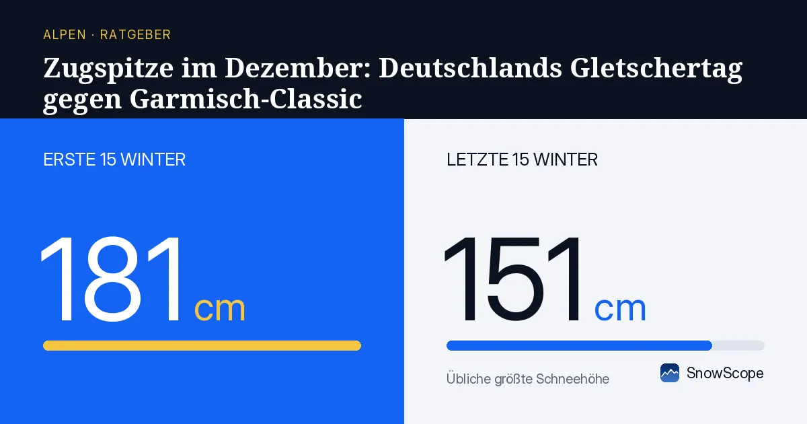

Zugspitze im Dezember: Deutschlands Gletschertag gegen Garmisch-Classic
Mitte Dezember liegt das Gletscherplateau der Zugspitze unter tiefem Schnee, während das tiefer gelegene Garmisch-Classic-Gebiet eine dünnere Decke zeigt. Beide Gebiete kosten online etwa EUR 70 für einen Tagesticket, aber die Schneetiefe in jeder Höhe erzählt eine andere Geschichte darüber, wo dein Geld hingeht.
Die Live-Schneeprognose für Zugspitze in der SnowScope-AppSchneehöhen, Pulverschnee-Alarme und 3D-Karte, gratis.
Eine Stadt, zwei völlig unterschiedliche Berge
Garmisch-Partenkirchen liegt am Fuße von Deutschlands höchstem Berg. Das Zugspitze-Gletschergebiet erstreckt sich von der Talstation auf 995 m bis 2.627 m, mit 16 km markierten Abfahrten, die von 38 Liften bedient werden. Garmisch-Classic verteilt sich auf 38 km Abfahrten von 727 m bis 2.047 m mit 18 Liften, alle in der gleichen Stadt.
Im Dezember ist die Wahl zwischen ihnen klar, aber kostspielig. Du kannst für zuverlässig tiefem Schnee auf einem kleinen Gletscherplateau zahlen, oder mehr Gelände, aber unsichere Schneedecke tiefer unten.


Wo der Schnee im Dezember sicher ist
Die Zugspitze-Spitze auf 2.627 m hatte in der Woche vom 15.–21. Dezember über 46 Winter hinweg in jedem einzigen Winter 30 cm oder mehr. In der Weihnachtswoche trugen 96 % der Winter 60 cm oder mehr. Selbst ein schwaches Jahr – die Art, die einmal in zehn Wintern vorkommt – hält dort am 15. Dezember 62 cm. Der letzte Winter hinterließ 80 cm.
Die Garmisch-Classic-Spitze (2.047 m) hatte in derselben Woche in 89 % der Winter 30 cm, aber ihre Mittellage (1.387 m) nur in 48 % der Winter. Die Basis auf 727 m zeigt am 15. Dezember typischerweise nur 6 cm. Für Dezember-Skifahren sind nur die Zugspitze-Spitze und die oberen Lifte von Garmisch-Classic zuverlässig.
Schneetiefe nach Datum im Dezember
Auf dem Zugspitze-Gletscherplateau erwarte 81 cm am 1. Dezember, 122 cm bis 15. Dezember und 144 cm am Heiligabend. In der Mittellage (1.811 m) liegen die Werte bei 35, 52 und 67 cm. Die Basis-Talstation zeigt durchschnittlich nur 7, 12 und 14 cm in denselben Zeiträumen – nicht genug zum Skifahren.
Garmisch-Classics Spitze wächst von 46 cm (1. Dez.) auf 57 cm (15. Dez.) bis 71 cm (24. Dez.), während ihre Mittellage von 24 cm auf 28 cm bis 36 cm geht. Beide Gebiete sehen von Ende Dezember an stärkeren Schneefall, aber früher Dezember auf Garmisch-Classic ist dünn, außer ganz oben.
Was die Zahlen für einen Dezember-Tag bedeuten
Bei klarem Wetter liefert das Zugspitze-Gletscherplateau sichere gute Bedingungen: ein breites, sanftes Plateau, wo die Decke ab frühen Dezember tief und stabil ist. Die Abfahrten sind nicht lang, aber der Schnee ist zuverlässig. Wenn ein Sturm das Plateau sperrt, hast du auf diesem Berg keinen Plan B.
Garmisch-Classic bietet mehr Vielfalt und mehr Abfahrten, aber Dezember-Skifahrer müssen auf den oberen Liften bleiben. Mittellage-Schneedecke ist unsicher; die Basis ist nicht befahrbar. Der Kompromiss ist Gelände gegen eine dünnere Schneedecke.
Ticketpreise und die Saisonkartenoption
Ein Tagesticket für Erwachsene auf der Zugspitze kostet EUR 70,50 online für 2026-27, inklusive Zahnradbahn- oder Seilbahnfahrt. Garmisch-Classic kostet EUR 69 online. Die offiziellen Seiten vermerken, dass Laufkundpreise an der Kartenkasse höher sind als Online-Tarife. Keines der Resorts listet eine 6-Tage-Karte auf der Hauptpreisseite.
Dezember-Wert liegt im online gekauften Tagesticket, nicht in der Wochenkarte. Wähle dein Gebiet nach der Vorhersage, kauf online, und halte beide Berge als Backup-Pläne bereit, falls einer sperrt oder das Wetter umschlägt.
Wie dieser Dezember mit der Vergangenheit vergleicht
Die Zugspitze-Spitze Schneetiefe im Dezember war konstant: typische 15.-Dezember-Tiefe war 112 cm in den ersten 15 Wintern der Aufzeichnungen (1980–95) und 115 cm in den letzten 15 (2011–26). Der letzte Winter war 80 cm, unter dem aktuellen Median, aber immer noch zuverlässig befahrbar.
Garmisch-Classics Mittellage erzählt eine weniger ermutigende Geschichte. Die Dezember-Tiefe dort ist von 54 cm typisch in früheren Wintern auf 47 cm in aktuellen gefallen. Dieser Winter-Trend ist mild, nicht dramatisch, aber er ist wichtig für ein Resort, das auf Dezember-Buchungen angewiesen ist.
Tipps für Skifahrer
- Kaufe dein Tagesticket online, bevor du ankommst: Es ist günstiger als der Laufkundpreis an der Kartenkasse.
- Auf der Zugspitze fahre die Gletscherabfahrten und nimm die Zahnradbahn oder Seilbahn zurück; Dezember-Schnee an der Talstation ist zu dünn zum Skifahren.
- Auf Garmisch-Classic Mitte Dezember nutze nur die oberen zwei Lifte, es sei denn, Neuschnee kommt; die Mittellage hat in weniger als der Hälfte vergangener Dezember 30 cm Schnee.
- Checke die Bayerische Lawinenwarnprognose (Lawinenwarndienst Bayern), bevor du abseits der Pisten auf dem Zugspitze-Gletscher unterwegs bist.
- Wenn das Zugspitze-Plateau vorhergesagt wird (Sturm oder extreme Kälte) gesperrt zu werden, werden Garmisch-Classics obere Lifte deine Dezember-Option; prüfe die Vorhersage am Vorabend.
Zu diesen Zahlen
Die Schneehöhen der Skigebiete sind der meiste Schnee in den oberen Hängen am angegebenen Tag; es sind Schätzungen für eine Fläche, keine Messung an einem Punkt. Prognosen können sich ändern. Lies vor dem Freeriden immer den offiziellen Lawinenlagebericht.
Offizielle Lawinenlageberichte: Lawinenwarndienst Bayern
Diesen Bericht zitieren
Für Forschung, Lehre oder Presse: Zahlen und Grafiken sind unter CC BY 4.0 mit dieser Quellenangabe frei nutzbar.
SnowScope (2026), Zugspitze im Dezember: Deutschlands Gletschertag gegen Garmisch-Classic, https://snowscope.app/blog/de/2026/11/zugspitze-december-skiing-germany-glacier-price.html, abgerufen am 2026-11-14
SnowScope (Atlas Labs). (2026, November 14). Zugspitze im Dezember: Deutschlands Gletschertag gegen Garmisch-Classic. SnowScope snow reports. https://snowscope.app/blog/de/2026/11/zugspitze-december-skiing-germany-glacier-price.html
BibTeX
@misc{snowscope2026zugspitzedecemberskiingg,
author = {{SnowScope (Atlas Labs)}},
title = {Zugspitze im Dezember: Deutschlands Gletschertag gegen Garmisch-Classic},
year = {2026},
month = nov,
howpublished = {\url{https://snowscope.app/blog/de/2026/11/zugspitze-december-skiing-germany-glacier-price.html}},
note = {Published 2026-11-14 13:29 UTC; accessed 2026-11-14}
}· CC BY 4.0 · Methoden, Daten und Werkzeuge →
Zugspitze: Schnee und Temperatur nach Höhe, dieser Winter vs letzter (Werkzeuge) →
Zugspitze folgen
Gratis: eine Nachricht, wenn Neuschnee kommt, und jeden Morgen die Vorhersage.
Weitere Schneeberichte

Deutsche Berge bekommen bedeutende Schneefälle über sieben Tage, bis zu 29 cm möglich. Daten vom 18. November.

Zugspitze führt deutsche Skigebiete mit 53 cm am 19. November an. Die Schneedecke wächst; in der nächsten Woche sind 38 cm möglich.

In den vergangenen 72 Stunden fiel Neuschnee ungleichmäßig verteilt über Deutschland: 39 cm in den Allgäuer Alpen, 31 cm in den Bayrischen Alpen, 16 cm im Schwarzwald. Daten vom 21.11.2026.